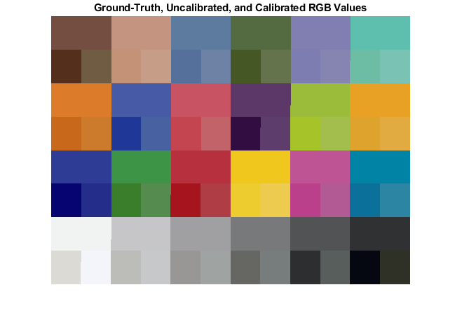
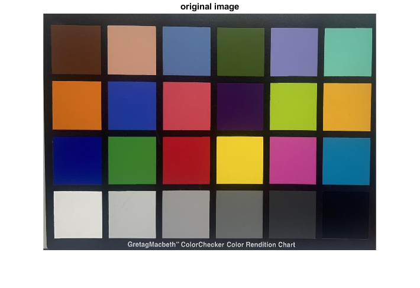
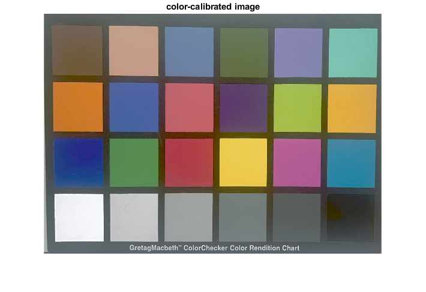

Project 7 Report
Team 5: Shakira Garnett, Hridiza Roy
Contents
Initialization
clear all; close all; clc; % load the CIE observer and illuminant data cie = loadCIEdata;
Step 1
cam_RGBs_orig = load("Cam_RGBs.txt"); cam_RGBs = uint8((double(cam_RGBs_orig) / 255.0) * 100); table4ti1 = [(1:30)', [cam_RGBs'; zeros(3, 3); 100 * ones(3, 3)] ]; uncal_XYZs = importdata("workflow_test_uncal.ti3",' ',20); uncal_patches_XYZ = uncal_XYZs.data(1:24, 5:7); uncal_disp_black_XYZ = uncal_XYZs.data(25:27, 5:7); uncal_disp_white_XYZ = uncal_XYZs.data(28:30, 5:7); uncal_XYZk = mean(uncal_disp_black_XYZ, 1); uncal_XYZw = mean(uncal_disp_white_XYZ, 1); uncal_display_Labs = XYZ2Lab(uncal_patches_XYZ', uncal_XYZw'); data = load('munki_CC_XYZs_Labs.txt'); % Columns 5-7 for Lab values, transpose to make it 3x24 munki_Labs = data(:, 5:7)'; deltaEs_uncal = deltaEab(uncal_display_Labs, munki_Labs); min_deltaEs_uncal = min(deltaEs_uncal); max_deltaEs_uncal = max(deltaEs_uncal); mean_deltaEs_uncal = mean(deltaEs_uncal); print_uncalibrated_workflow_error(munki_Labs, uncal_display_Labs, deltaEs_uncal);
Uncalibrated workflow color error
camera->RGB_cam->display
Real vs. displayed ColorChecker Lab values
real displayed
patch # L a b L a b dEab
1 37.1865 14.9985 15.2592 23.9664 19.9315 21.5974 15.4686
2 65.8188 16.8695 18.0267 64.7376 23.9002 22.7602 8.5444
3 49.9949 -3.1841 -23.5159 45.7015 -0.5305 -31.1092 9.1177
4 42.6411 -15.3251 20.0423 34.0086 -17.9552 30.0310 13.4615
5 54.6852 9.6978 -26.7126 53.1739 11.6695 -30.4895 4.5207
6 71.2441 -33.1391 -0.5010 70.1385 -39.0601 2.4161 6.6926
7 62.2558 34.1094 57.7774 55.2246 45.4572 69.4492 17.7324
8 39.5890 9.9980 -43.6388 25.9319 21.4780 -60.2753 24.3942
9 51.8424 48.1403 16.0636 49.0796 64.0226 26.5741 19.2445
10 29.4495 22.4255 -21.7661 10.8466 33.8047 -27.7551 22.6147
11 71.6264 -24.3441 57.6850 74.4112 -31.0283 81.6949 25.0780
12 72.2288 20.6039 69.0149 71.3163 22.6329 78.7694 10.0049
13 28.6402 18.5907 -51.4092 8.4363 42.8543 -65.1793 34.4462
14 54.6309 -39.5493 32.8341 45.8036 -45.2596 41.5981 13.6871
15 42.5988 54.6049 25.7315 36.7070 68.3091 44.7099 24.1391
16 82.4265 3.8689 78.8570 83.2902 4.2153 93.1871 14.3603
17 51.5476 49.5154 -14.3758 47.8079 67.2402 -16.4313 18.2313
18 49.3892 -26.5473 -28.6645 42.2902 -21.9136 -34.6778 10.3936
19 95.4458 -0.4414 0.0244 86.1672 1.8938 1.3912 9.6650
20 80.0339 0.1309 -0.9345 76.0798 0.2104 1.1822 4.4857
21 66.0107 -0.0004 -1.1463 61.7053 2.1715 0.2022 5.0072
22 50.5546 -0.6207 -0.9616 42.5691 0.1970 -0.1062 8.0728
23 35.1532 -0.0632 -0.9708 18.7987 -2.0610 -1.0904 16.4765
24 20.3224 -0.2858 -0.5603 1.4032 1.1918 -6.2063 19.7990
min 4.4857
max 34.4462
mean 14.8182
Step 2
cam_XYZs = camRGB2XYZ('cam_model.mat', cam_RGBs_orig); XYZn_D50 = ref2XYZ(cie.PRD, cie.cmf2deg, cie.illD50); disp_RGBs_orig = XYZ2dispRGB('display_model.mat', cam_XYZs, XYZn_D50); disp_RGBs = uint8((double(disp_RGBs_orig) / 255.0) * 100); table4ti1 = [(1:30)', [disp_RGBs'; zeros(3, 3); 100 * ones(3, 3)] ]; cal_XYZs = importdata('workflow_test_cal.ti3',' ',20); cal_CC_patches_XYZ = cal_XYZs.data(1:24, 5:7); cal_disp_black_XYZ = cal_XYZs.data(25:27, 5:7); cal_disp_white_XYZ = cal_XYZs.data(28:30, 5:7); cal_XYZk = mean(cal_disp_black_XYZ, 1); cal_XYZw = mean(cal_disp_white_XYZ, 1); cal_display_Labs = XYZ2Lab(cal_CC_patches_XYZ', cal_XYZw'); deltaEs_cal = deltaEab(cal_display_Labs, munki_Labs); min_deltaEs_cal = min(deltaEs_cal); max_deltaEs_cal = max(deltaEs_cal); mean_deltaEs_cal = mean(deltaEs_cal); print_calibrated_workflow_error(munki_Labs, cal_display_Labs, deltaEs_cal);
Calibrated workflow color error
camera->RGB_cam->camera_model->XYZ_est->display_model->RGB_disp->display
Real vs. displayed ColorChecker Lab values
real displayed
patch # L a b L a b dEab
1 37.1865 14.9985 15.2592 40.8345 8.1187 18.9977 8.6381
2 65.8188 16.8695 18.0267 68.7555 18.4823 19.2251 3.5584
3 49.9949 -3.1841 -23.5159 53.6878 -1.3400 -23.0314 4.1560
4 42.6411 -15.3251 20.0423 46.5355 -12.8293 20.8206 4.6905
5 54.6852 9.6978 -26.7126 57.1489 11.4127 -26.2307 3.0403
6 71.2441 -33.1391 -0.5010 73.0365 -34.1675 -0.6145 2.0695
7 62.2558 34.1094 57.7774 60.1030 36.8991 65.9315 8.8829
8 39.5890 9.9980 -43.6388 40.8059 7.1166 -42.7157 3.2612
9 51.8424 48.1403 16.0636 54.4854 49.8429 14.4949 3.5136
10 29.4495 22.4255 -21.7661 31.0703 25.9209 -24.5825 4.7725
11 71.6264 -24.3441 57.6850 73.4609 -28.0075 60.3378 4.8809
12 72.2288 20.6039 69.0149 73.7237 18.2062 71.2252 3.5873
13 28.6402 18.5907 -51.4092 23.0242 27.1876 -57.8539 12.1236
14 54.6309 -39.5493 32.8341 53.1782 -37.1196 29.9513 4.0404
15 42.5988 54.6049 25.7315 44.1032 58.5936 24.4364 4.4554
16 82.4265 3.8689 78.8570 83.5569 4.2016 76.5299 2.6084
17 51.5476 49.5154 -14.3758 51.0050 53.1904 -16.8672 4.4730
18 49.3892 -26.5473 -28.6645 50.8871 -26.3166 -27.2838 2.0502
19 95.4458 -0.4414 0.0244 95.3075 1.5883 -2.6431 3.3548
20 80.0339 0.1309 -0.9345 80.1038 0.8825 -0.8071 0.7655
21 66.0107 -0.0004 -1.1463 66.3393 -1.6564 -0.7183 1.7416
22 50.5546 -0.6207 -0.9616 51.5354 -2.8939 -2.5852 2.9607
23 35.1532 -0.0632 -0.9708 39.1181 -2.1010 -1.2614 4.4674
24 20.3224 -0.2858 -0.5603 19.6650 -3.7294 6.8374 8.1864
min 0.7655
max 12.1236
mean 4.4283
Step 3
% Get XYZ values munki_XYZs = data(:, 2:4); % Create the color transformation structure for XYZ to sRGB cform = makecform('xyz2srgb', "AdaptedWhitePoint", XYZn_D50'); % Apply the color transformation munki_RGBs = applycform(double(munki_XYZs), cform); % Rescale RGB values from 0-100 to 0-255 munki_RGBs_uint8 = uint8(munki_RGBs * 255); % Repeat rows of ground truth to create 48 x 3 matrix top_row = reshape([munki_RGBs_uint8'; munki_RGBs_uint8'], [3, 48])'; % combine calibrated and uncalibrated data in an alternating fashion bottom_row = reshape([cam_RGBs_orig; disp_RGBs_orig], [3, 48])'; % combine the top and bottom rows and reshape them workflow_diffs = pagetranspose(reshape([reshape(top_row, [12, 4, 3]); ... reshape(bottom_row, [12, 4, 3])], [12, 8, 3])); % Resize the final image to 768 x 1024 workflow_diffs_resized = imresize(workflow_diffs, [768, 1024],'nearest'); % Visualize the result figure; imshow(workflow_diffs_resized); title('Ground-Truth, Uncalibrated, and Calibrated RGB Values'); axis off; % Save the resized image as a PNG imwrite(workflow_diffs_resized, 'workflow_diffs.png');
Step 4
% Load the original ColorChecker image img_orig = imread("chart.jpg"); % Reshape the image into a pixel vector [r, c, p] = size(img_orig); % Get the dimensions of the image pix_orig = reshape(img_orig, [r*c, p])'; % Reshape to 3x(rows*cols) % Convert RGB to XYZ, pix_orig' is 3xN pix_XYZ = camRGB2XYZ('cam_model.mat', pix_orig); % XYZ2dispRGB will take the XYZ values and convert to calibrated RGB pix_DCs_calib = XYZ2dispRGB('display_model.mat', pix_XYZ, XYZn_D50); % Reshape the processed pixels back into an image img_calib = reshape(pix_DCs_calib', [r, c, p]); % Save the color-calibrated image as a .png file imwrite(img_calib, 'color_calibrated_image.png'); % Show original image figure; imshow(img_orig); title('original image'); % Visualize the result figure; % Display the color-calibrated image imshow(img_calib); title('color-calibrated image'); 
Feedback
i. Who did which parts
Shakira - 3, 4
Hridiza - 1, 2, 3 (minor)
ii. Problems
- Creating the matrix for part 3 was very tricky
- Figuring out that we needed to use "AdaptedWhitePoint" in "makecform"
iii. Valuable parts
- Part 3d was a fun challenge, and helped us learn about how "reshape" really works in MATLAB
- Practically seeing the differences between calibrated and uncalibrated workflows
iv. Improvements
- Minor fixes in the writeup:
- Part 3d: Visualizing the 8 x 12 x 3 array (using image cmd) produces an extremely small image. It helps if we visualize the 768 x 1024 x 3 array instead
- Part 3c: The resulting RGBs from xyz2srgb are not scaled 0-100, but 0-1.
- Parts 1h and 2j: Seem unnecessary since we're not printing them, and they're already being printed by the supplied print functions
- Part 2g: Typo - It should say "workflow_test_cal.ti3" instead of "workflow_test_uncal.ti3"